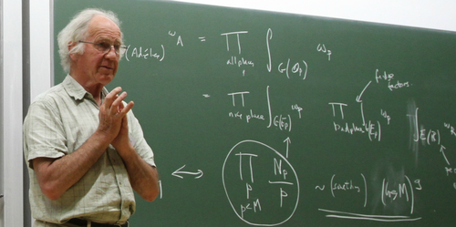
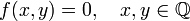
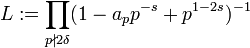
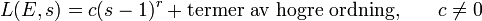

Birch-Swinnterton-Dyer

Birch–Swinnerton–Dyers förmodan tillhör området aritmetisk algebraisk geometri. Som Newton var den första att påpeka skär en linje en elliptisk kurva i tre punkter. För detta gäller att om två av dessa punkter är rationella är också den tredje rationell.
Låt E vara en elliptisk kurva, det vill säga en icke-singulär, projektiv kurva av genus 1, definierad över en talkropp K. Enligt Weierstrass form kan vi då definiera E: y² = x² + ax + b där a och b är heltal. Man kan visa att de rationella punkterna i K bildar en grupp under den additionsoperation som ges av att tre kolinjära punkter summerar till 0. Det vill säga:

Denna grupp består av en torsionskomponent samt r antal kopior av Z. r kallas rangen för E. Associerad till E finns också en meromorf funktion L(E,s), s komplex, kallad L-funktionen för E. Den definieras som en viss Eulerprodukt där faktorerna beror på antalet punkter på E över de ändliga kropparna.

För denna Eulerprodukt konvergerar Re(s) > 3/2 Birch-Swinnerton-Dyers förmodan lyder: Taylorexpansionen för L(E,s) vid s=1 har formen

Förmodan innebär alltså att gruppen innehåller ett ändligt antal rationella punkter om L-funktionen har ett nollställe i s=1 och ett oändligt om L-funktionen inte har det.
Foto: Wikipedia